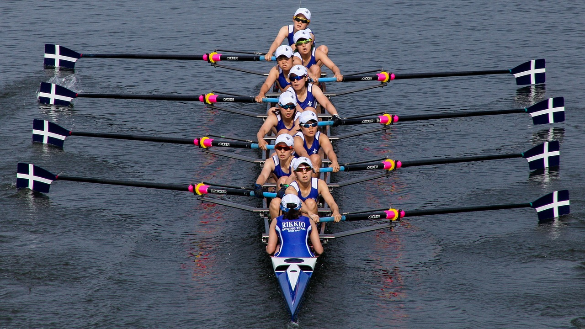
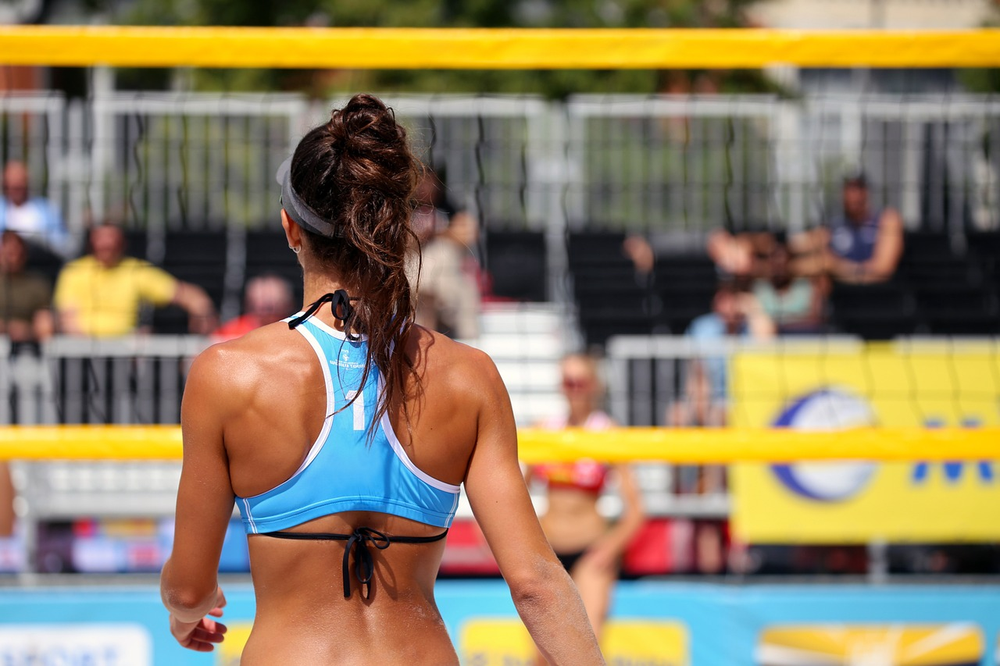
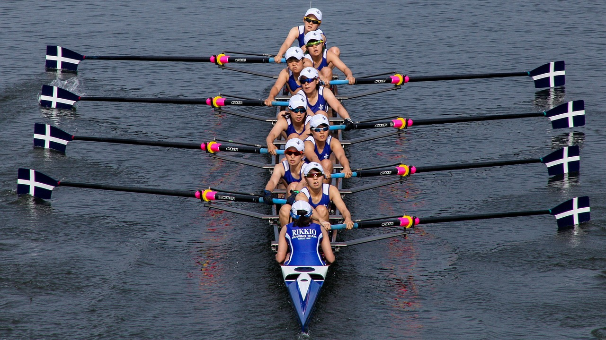
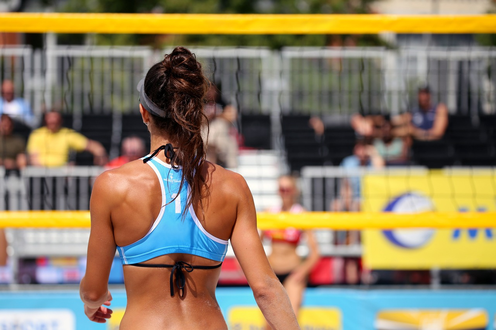

Los Juegos Olímpicos modernos tienen su fundamento en los Juegos Olímpicos antiguos —llamados así por celebrarse en la ciudad de Olimpia— que eran fiestas atléticas celebradas desde el año 776 a. C. (la fecha más aceptada), y cada cuatro años, en el santuario de Zeus en Olimpia, Grecia. En la competencia acudían participantes de varias ciudades-estado y reinos de la antigua Grecia.


 


